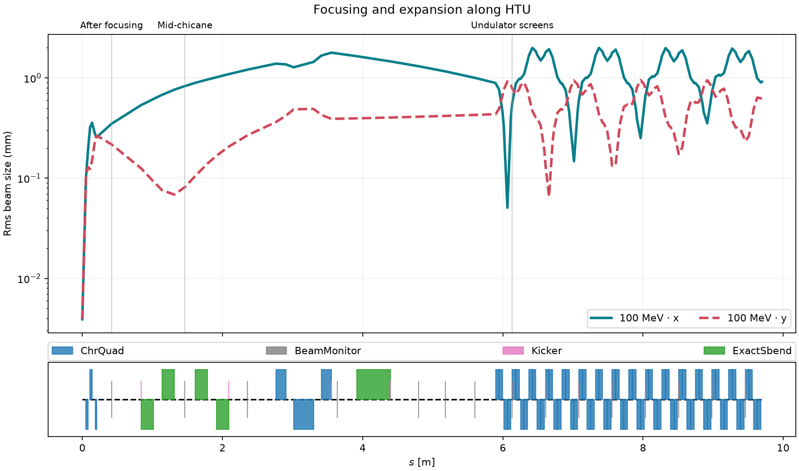

A Beam Transport Line
Last updated on 2026-09-23 | Edit this page
Estimated time: 35 minutes
Overview
Questions
- 🧲 How do magnets guide and focus an electron bunch?
- 🔍 How can beam screens reveal changes along a beamline?
- 🧩 What changes when we track independent particles instead of evolving a plasma?
Objectives
- Identify drifts, quadrupoles, dipoles, and diagnostic screens.
- Run an ImpactX simulation and connect beam shapes to the magnet sequence.
- Distinguish particle sampling from physical bunch charge.
- Interpret beam-size plots within the assumptions of the model.
From an electron source to a beamline
An electron bunch needs guidance after it leaves its source. Magnets steer its trajectory and focus it toward the next experiment. Here, ImpactX tracks a bunch through the Hundred-Terawatt Undulator (HTU) beamline at LBNL’s BELLA Center, using the magnet sequence from the ImpactX HTU example. See Introduction to ImpactX for the beam-dynamics background. The bunch in this example is sampled from a Gaussian distribution.
The bunch and its numerical representation
| Setting | Default | Notebook variable |
|---|---|---|
| Particle species | Electrons | Reference particle charge and mass |
| Bunch and reference total energy | 100 MeV, including rest energy | reference_total_energy_MeV |
| Bunch charge magnitude | 25 pC | bunch_charge=25e-12 |
| Number of macroparticles | 10,000 | particles |
| Normalized transverse emittance | 1.5 µm in each plane | Gaussian distribution setup |
| Space charge | Off | sim.space_charge = False |
Each macroparticle represents many electrons. Increasing
particles samples the same 25 pC bunch more finely; it does
not increase its charge.
The notebook defines the reference particle, Gaussian bunch, lattice,
and tracking calls in run_beam. The reference-particle API
takes kinetic energy, so the code subtracts electron
rest energy from the specified total energy. The twiss(...)
call supplies distribution parameters; dividing normalized transverse
emittance by βγ gives geometric emittance.
Particles move through prescribed magnets without collective fields. Space charge, radiation, and apertures are not modeled. The screens record the beam without clipping it, so a charge check cannot establish whether the beam would fit through real openings.
Get ready to run
Use the tutorial
setup instructions for Docker or Conda. They provide ImpactX,
Jupyter, and the analysis packages. For independent use, the files live
in episodes/files/beam-transport/:
- htu_transport.ipynb defines and runs the simulation.
- impactx_helpers.py provides analysis and plotting utilities. Keep it alongside the notebook.
If you downloaded only the workshop folder during setup, obtain the standalone example from the repository root with:
In the tutorial container or a full repository checkout, the example is already included.
The first code cell downloads htu_lattice.py from the
pinned ImpactX 26.09 example if it is missing, so the first run needs
network access. Existing local copies are kept. The lattice uses its
default chicane setting.
For the hosted workshop, follow the LLNL launch instructions.
Track the bunch
Open the notebook from beam-transport/ and select a
kernel with ImpactX and the analysis packages. In the tutorial container
this is WarpX CPU, which includes ImpactX. Keep the
default particle count and energy, and run sections 1–3 in order.
The simulation runs directly in the notebook kernel. Each call
creates a new transport-* folder under
beam-transport/runs/, containing diagnostics and
performance.json. The reported runtime covers setup,
particle generation, tracking, and diagnostic output; it excludes kernel
startup and plotting. run_beam requests two CPU threads via
sim.omp_threads; pass cpu_threads=4, for
example, to change that.
After changing settings, rerun the settings cell, the simulation
call, and the analysis cells. If you edit run_beam itself,
rerun its definition too.
Interpret the results
First open a saved screen with the notebook’s diagnostic-reading
cells. An openPMD series contains iterations and particle species. The
beam species is loaded into a table with one row per
macroparticle. Extract transverse positions and weights, then plot a
charge histogram with Matplotlib. Colors show charge magnitude
per bin, not charge density per unit area.
Use Play screens or the slider to follow the bunch
along the beamline. These are snapshots at different locations, not a
movie in physical time. Turn off Zoom to fit to compare
sizes on fixed axes; zoomed maps can switch between µm and mm. The
viewer also saves beam_explorer.html in the run folder,
which can be opened in a browser.

The rms sizes describe the spread of particle positions in x and y. The magnet diagram below the curves shows where the beamline elements sit:
- Drifts: particles travel without magnetic forces. Depending on their incoming angles, the bunch can expand or converge to a waist.
- Quadrupoles: focus in one transverse plane and defocus in the other. Alternating quadrupoles control both planes; compare the waist locations in x and y.
- Chicane dipoles: bend the beam through a sideways detour. Different momenta bend differently, coupling horizontal position to momentum.
- Screens: record the beam at selected locations in this model.
Find TCPhosphor after the initial focusing magnets,
ChicaneSlit in the chicane, and the exit. A size change can
develop downstream of the magnet that changed the particle angles.
Follow the beam
Does the beam stay round? Where is it narrowest in each plane? Connect these changes to the nearby magnets and drifts using both the screen histograms and the rms-size curves.
Change the beam energy
Change reference_total_energy_MeV, then rerun the
settings, simulation, and analysis. This changes both the reference
energy and the center of the bunch distribution. The lattice keeps its
default settings; changing the energy does not retune the magnets. How
do the beam sizes and waist locations change?
Sample the same bunch more finely
Increase particles, keeping the other settings fixed.
Compare the beam’s sampled shape, runtime, and output size. Which
features persist? A smoother histogram alone does not validate the
physical model.
Connecting to a plasma accelerator
Replacing this Gaussian bunch with a plasma-generated source would require selecting the bunch and matching coordinate and momentum conventions. Energy spread, transverse size, divergence, emittance, and charge would all matter for transport. The current examples do not perform that handoff.
- 🧲 Magnets change particle trajectories; drifts allow those changes to develop into different beam sizes.
- 🔍 Screen histograms and rms-size curves connect the bunch to the lattice.
- 🧩 More macroparticles sample the same bunch more finely.
- 📏 The model omits collective fields, radiation, and apertures; interpret its diagnostics within those limits.